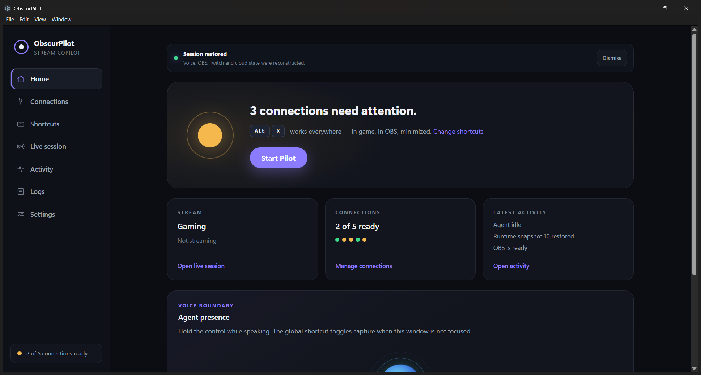
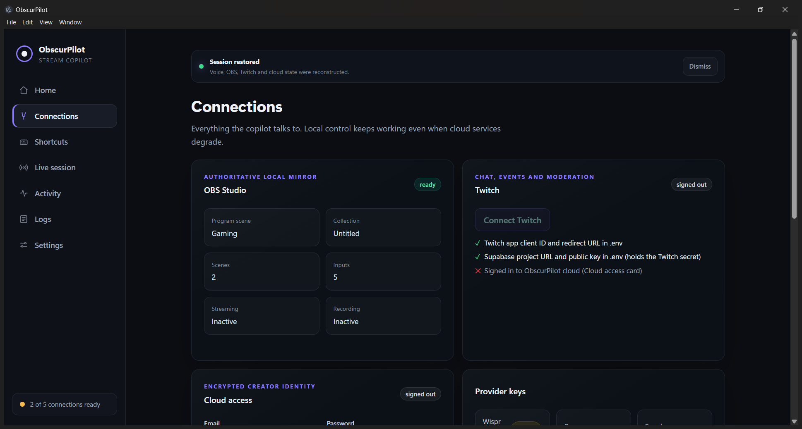
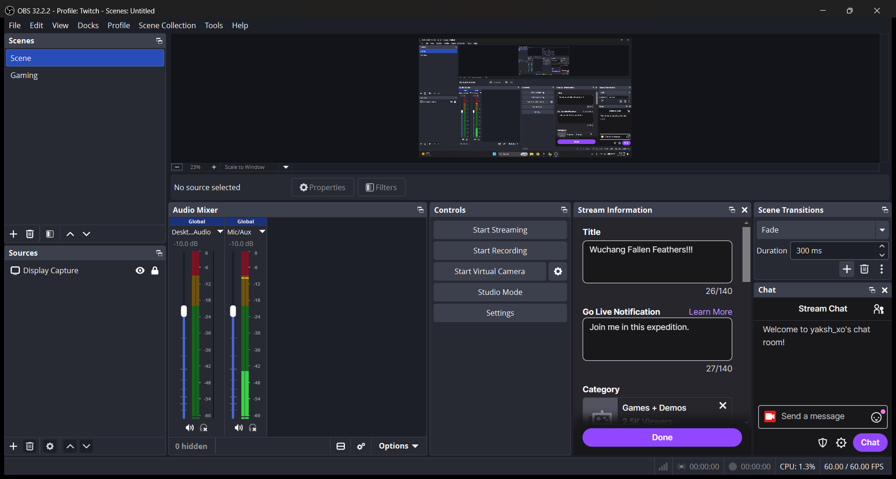
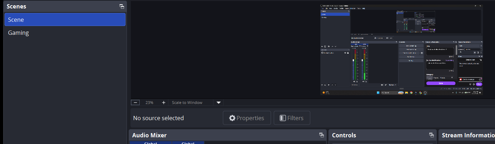
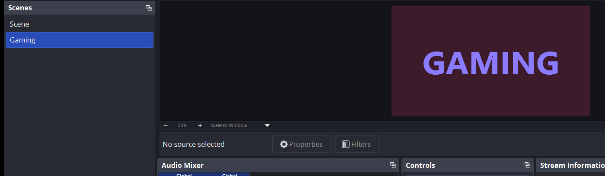
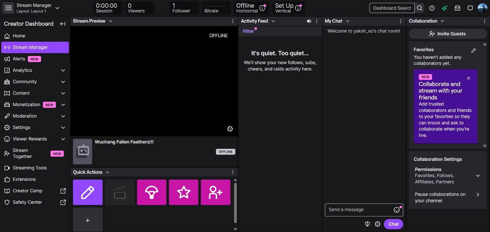

Meet ObscurPilot

A voice copilot for OBS and Twitch. You talk, it runs the show.
One click to start


A live mirror of OBS: scenes, inputs, stream state.
It finds OBS and connects. No passwords to copy.
“Pilot,switchtothegamingscene”


It understands, picks the right tool, and acts.
OBS switched to Gaming.
Pilot needs your approval
Anything risky waits for your yes.

Plugged into Twitch: stream title, category, chat and moderation.
What ObscurPilot is doing right now: connections, voice, the agent, and live sessions.
Start Pilot requested
Show Pilot: done
OBS readySYNCHRONIZED
Transcribing with Wispr Flow
Agent tool activeobs.set_scene
Program scene changedGaming
Every move, logged. Your keys never reach the screen.
Spoken replies. Hands-free with “Hi Obscur”.
Hold Alt + X. Talk to your stream.
OBS · Twitch · Wispr Flow voice · approvals · logs
Built entirely by voice with Wispr Flow